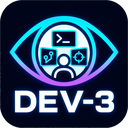

RPH Oz scene prototype
Chosen direction: Cine-AI with more data
Symfony owns scripts, shot annotations, character recipes and review. Cine-AI supplies a starting architecture for camera technique selection and storyboard playback. First make authored decisions useful in the static shotlist; later realize them in Unity.
Read the full detailed handoff: source audit, proposed data model, Unity tools, local/paid voices, dataset limitations, and seven-step resume plan.
What more data means
Store shot sequences linked to script beats, subject and foreground actors, blocking, gaze, camera side, framing, motion, timing, dramatic purpose and review provenance. Preserve source examples, then derive versioned context-aware style profiles. Start with a reviewed English conversation: master, alternating OTS, reaction close-up and insert.
Cine-AI source audit
MIT upstream targets Unity 2020.2.2f1. Its two published director JSON files are aggregate technique profiles, not a large aligned screenplay/shot corpus. Runtime playback uses precomputed camera decisions; planning lives in editor code. Port a small runtime-safe subset to Unity 6, use stable actor IDs and review numerical probability handling. No integration or upstream build was performed.
Data and tools
PROSE has 68 paired episodes, but inspected samples mix Chinese directions with English content. Preserve originals and reviewed translations if imported. PSL 2 includes speech and actor events as well as camera/composition vocabulary. Four authors’ SRT annotation inputs are now verified; the parser repository remains unverified.
UMA is the leading runtime avatar candidate; Genies is a second option requiring ecosystem/terms review. Cinemachine, Playables and Animation Rigging can realize shots, timing and gaze. SALSA is a paid lip-sync candidate. Kokoro/Piper are local voice leads; ElevenLabs is a paid lead; confirm AssemblyAI's scripted synthesis suitability. None has been installed for this research.
Verified annotations and rehearsal boundary
Read the new model/rehearsal clarification. Rope, Touch of Evil, North by Northwest and Back to the Future have timed PSL annotations suitable for a future step-through timeline. Preserve compositions and camera developments separately from cuts. Historical timed speech alignment and mismatch feedback were found in sandesa/vt; RPH currently has role highlighting and playback, without live microphone/line-matching feedback.
Preserved baseline and restart point
RPH has the keyboard-controlled static shotlist, four Oz scenes, 41 cached voices and Celtx production boards/layouts. The independent Unity repository and release preserve the working coarse-character player. Resume with the richer shot schema and one reviewed English scene in Symfony. Film-cut recovery through Scenea remains deferred.